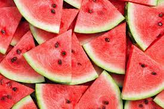

Above is a refreshing image of a juicy watermelon. Get ready to make a delightful watermelon treat!
Beat the heat with this mouthwatering Watermelon recipe that's perfect for hot summer days. This juicy and refreshing fruit is a delicious treat on its own, but we'll take it to the next level with a twist. You're in for a sweet and tangy surprise!
To make this delightful Watermelon treat, follow the simple steps below. You'll need just a few ingredients to create a summertime sensation that everyone will love.
Ingredients:
- 1 Watermelon (ripe and seedless)
- 1 Lime (juiced)
- 1/4 cup Fresh Mint Leaves (chopped)
- 2 tablespoons Honey (optional, for added sweetness)
Instructions:
- Start by washing the watermelon thoroughly under running water.
- Cut the watermelon in half and scoop out the flesh using a melon baller or cut it into bite-sized cubes.
- Place the watermelon balls or cubes in a large serving bowl.
- Squeeze the juice of one lime over the watermelon to add a refreshing citrusy flavor.
- If you desire extra sweetness, drizzle 2 tablespoons of honey over the watermelon.
- Sprinkle the freshly chopped mint leaves on top of the watermelon for a burst of fresh flavor.
- Gently toss everything together to ensure the watermelon is coated with lime juice, honey, and mint.
- Chill in the refrigerator for about 30 minutes before serving to enhance the flavors.
- Serve your Watermelon treat in individual bowls or cups. It's a refreshing and hydrating snack perfect for summer gatherings!